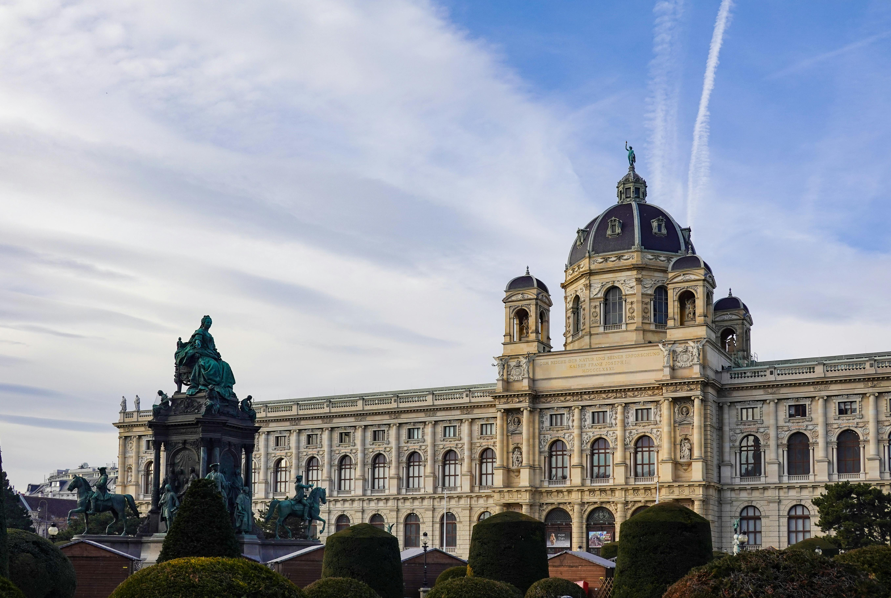
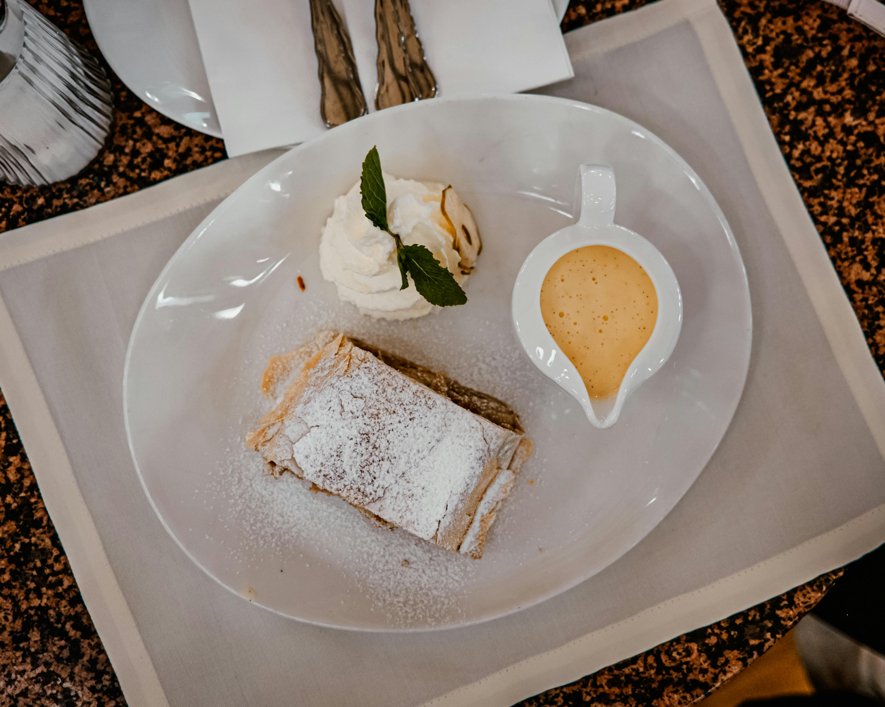
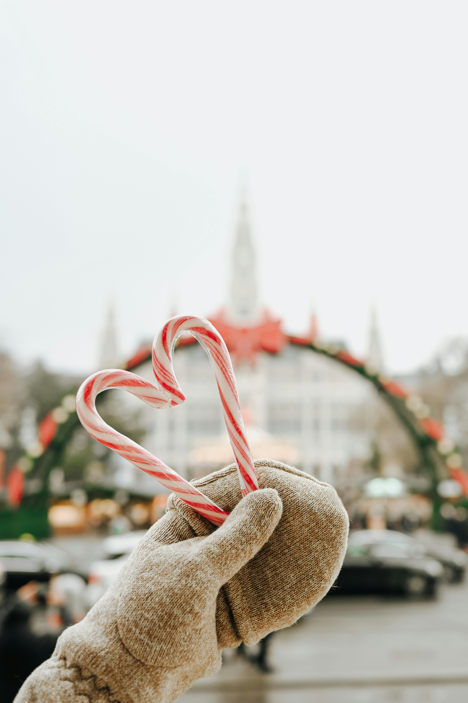
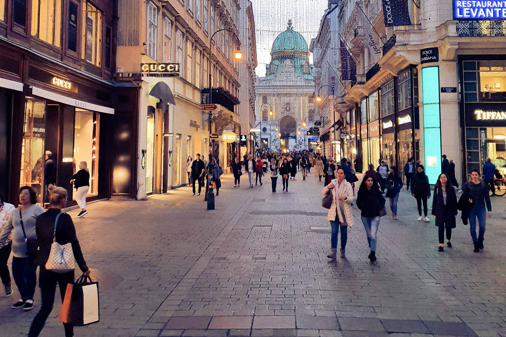
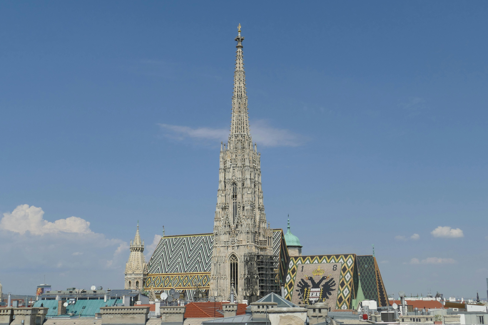

Explore Vienna
Everything you need to know before visiting
Essential Information
- Currency: Euro (€)
- Language: German (learn basic phrases like "Guten Tag" (Hello) and "Danke" (Thank you)). English is widely spoken in tourist areas.
- Getting Around:
- -> Vienna’s public transport system (U-Bahn, trams, buses) is efficient and easy to use.
- -> Purchase a Vienna City Card for unlimited public transport and discounts at attractions.
- -> Walking is ideal in the city center due to Vienna's compact layout.

Top Attractions
- Schönbrunn Palace: A UNESCO World Heritage site with stunning gardens and an opulent palace interior.
- Hofburg Palace: Former imperial residence with fascinating museums, including the Sisi Museum.
- St. Stephen’s Cathedral: An iconic gothic masterpiece in the heart of Vienna.
- Belvedere Palace: Home to an impressive art collection, including Gustav Klimt’s "The Kiss."
- Prater and the Giant Ferris Wheel: A historic amusement park offering great views of Vienna.
- Vienna State Opera: Renowned for its performances and architectural beauty.

Best Restaurants
- For Austrian Cuisine:
- Figlmüller: Famous for its oversized schnitzels.
- Plachutta Wollzeile: Renowned for Tafelspitz (boiled beef).
- Gasthaus Pöschl: A cozy spot for traditional Viennese dishes.
- International Cuisine:
- Das Loft: A rooftop restaurant offering modern cuisine and breathtaking views.
- ef16 Restaurant: Known for its creative and seasonal menu.
- Cafés and Desserts:
- Café Sacher: Try the original Sachertorte.
- Café Central: A historic café loved by famous intellectuals.
- Demel: Renowned for its pastries and strudels.
- Vineyards and Wine Bars:
- Weingut Heuriger Hirt: Enjoy Austrian wines and traditional snacks.

Best Time to Visit
- Spring (April to June): Pleasant weather with blooming parks and gardens.
- Fall (September to November): Crisp weather and fewer tourists.
- Winter (November to December): Magical Christmas markets and festive decorations.
- Avoid: July and August if you want to avoid the heat and crowds.

Shopping in Vienna
- Kärntnertorstraße: A popular shopping street with a mix of international and local brands.
- Graben: A prestigious street offering luxury boutiques, high-end fashion, and jewelry.
- Mariahilfer Straße: Vienna's largest shopping street, home to a wide range of shops, from department stores to trendy boutiques.
- Donau Zentrum: One of Vienna’s largest shopping malls with a variety of shops, restaurants, and entertainment options.
- Parndorf Fashion Outlet: Located just outside Vienna, it offers discounted designer brands and is a popular shopping destination for bargain hunters.

Tips for Tourists
- Public Transport: Validate your ticket before traveling to avoid fines.
- Book in Advance: Popular attractions like Schönbrunn Palace and Vienna State Opera often sell out.
- Local Etiquette: Be punctual, say "Grüß Gott" (Hello), and don’t jaywalk.
- Tipping: Round up the bill or leave 5-10% in restaurants.
- Drinking Water: Tap water is high-quality and safe to drink.
- City Card: The Vienna City Card offers unlimited transport and discounts at attractions.

Bonus Experiences
- Day Trips:
- Wachau Valley: Visit the scenic vineyards and historic Melk Abbey.
- Bratislava: A quick trip to Slovakia's charming capital.
- Salzburg: Explore Mozart’s birthplace and beautiful alpine scenery.
- Hidden Gems:
- Augarten: A tranquil park with art and porcelain exhibits.
- Hundertwasserhaus: A quirky, colorful apartment complex designed by Friedensreich Hundertwasser.
- Nightlife: Explore rooftop bars like 25hours Hotel Dachboden or enjoy classical concerts at the Musikverein.
- Vineyards: Vienna is the only capital city with its own vineyards—try local wines at a Heuriger (wine tavern).
